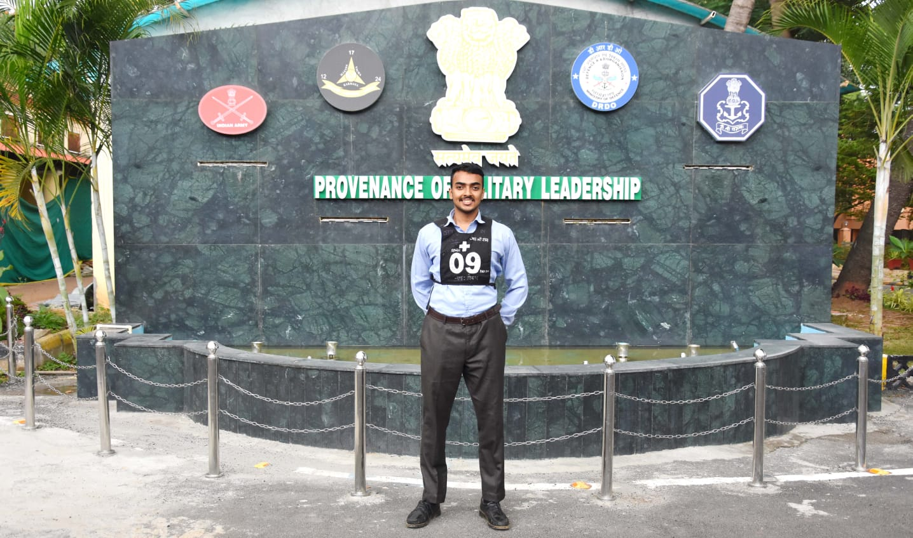

Campus Engagement
Student Experience Assistant, ISSC, ASU
Supported international arrivals, airport reception, and onboarding for students at ASU.
Achievements & Activities
Alongside engineering work, I have led technical workshops, supported student onboarding, and earned recognition across academics, innovation, and outreach.
Campus Engagement
Supported international arrivals, airport reception, and onboarding for students at ASU.
Competition
Innovation
Academic
Campus
Creator
Training
Delivered hands-on sessions spanning AI, deepfakes, drones, and cybersecurity topics.


Teaching
Applied sessions and lectures focused on AI, cyber awareness, and emerging technology.

Selection Highlight
Recommended for the Indian Navy SSC (IT) selection process after a rigorous multi-stage evaluation focused on leadership, adaptability, and problem-solving.